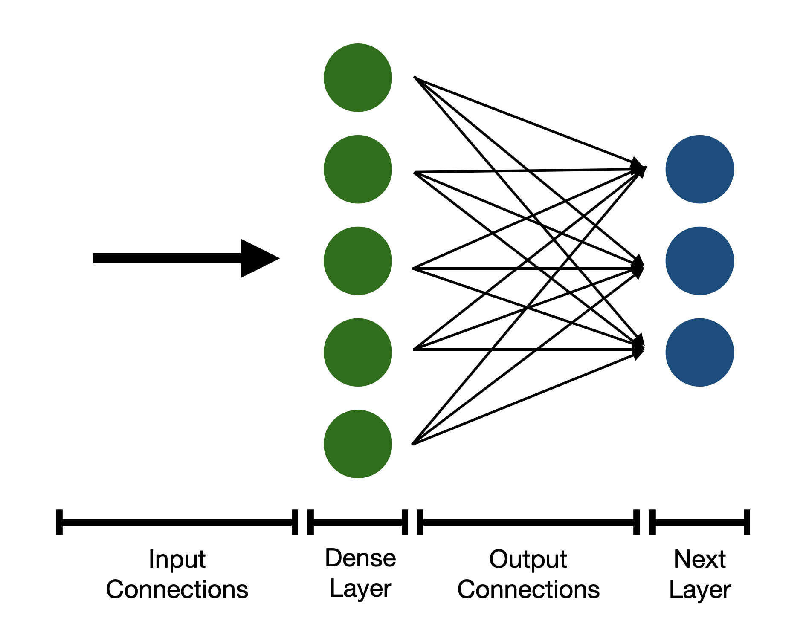

AI: Making an ML Model
Module 4: Part 1 Learning Objectives
- Appreciate what is meant by “machine learning” and “AI”
- Understand the high-level steps needed to train a statistical model
- Rationale for “verifying your model findings” and how to use a test set
- Understand dataset bias and clinical factors
What is machine learning?
- Machine learning describes a collection of algorithms that allow computers to “learn” from data.
- This stands in contrast to describing exactly what an algorithm should detect with code
Big Data, Machine Learning, and Artificial Intelligence
- Big data support the development of ML/AI
- The six Vs of big data: volume, variety, velocity, veracity, value, and variability
- I would like to add vulnerability
Machine Learning vs. Artificial Intelligence
- There are no set, global definitions for either term!
- Machine learning (ML) often refers to a specific subset of statistical algorithms.
- Artificial neural networks
- Decision trees
- Support vector machines
- And more - it is a loose category
Machine Learning vs. Artificial Intelligence
- There are different types of ML:
- Supervised learning
- Unsupervised learning
- Reinforcement Learning
- Deep Learning refers to neural networks with multiple layers
- We will be building one in the workshop.
Supervised / Unsupervised Learning
- Supervised learning uses labelled data.
- For instance, a neurologist labels data with different types of EEG patterns.
- The model learns to predict which pattern is present.
Supervised / Unsupervised Learning
- Unsupervised learning uses unlabelled data
- For instance, an ML system is given a series of normal chest radiographs and learns how best to compress and uncompress them.
- This is known as an autoencoder.
Variational Autoencoder - By EugenioTL - Own work, CC BY-SA 4.0, link here
Appreciate
Right??
How to train an ML model
What steps are needed to train a machine learning model?
- Collecting or identifying a dataset
- Partitioning a dataset into groups
- Preprocessing your dataset
- Designing the architecture of the model
- Training the model
- Evaluating the model
- Deploying the model
Machine Learning Process

The MLOps Lifecycle
- MLOps = Machine Learning + Operations
- Key stages include:
- ETL pipeline: Extract, Transform, and Load data
- Train the model: Run computations to optimize model performance
- Deploy the model: Serve it to users in real-time, with continuous deployment
How do you split up a dataset?
- A dataset is typically split into three parts
- Training data (training the model)
- Testing data (testing the model after training)
- Validation data (testing the model during training)
- The reasons for this will be discussed over the course of these two seminars.
Bias in Machine Learning
Bias in clinical applications
- Bias can come from many places during creation of a clinical dataset.
- Missing data for certain groups
- Lack of robust data collection protocols for researchers
- Biased sampling
- This can lead to algorithms that underperform for certain groups.
Source: [1] (see sources slide.)
Case Study 1 - Dermatology
- Convolutional neural networks can be trained to classify skin lesions.
- Dataset contains 5-10% images of lesions on black skin.
- Diagnostic accuracy halves when trialled with images of black skin.
Source: [1] (see sources slide.)
Case Study 2 - Heart Disease Predictors
- Predictive models for heart disease are often trained on datasets that have more data from male patients.
- How might this affect the clinical application of the tool?
Source: [1] (see sources slide.)
How to preprocess data for an ML model?
Data preprocessing
- Data preprocessing refers to optimising the data in your dataset for the model that you have chosen to train.
- Different models have different formats which the data must be in
- Data is often passed to the model as a NumPy array.
- These are often referred to as tensors
What kind of NumPy Array?
- This will depend on the type of data being used.
- For images, it is likely to be an image with certain:
- Dimensions (e.g.
256 x 256) - Number of channels (e.g. 1 or 3)
- Dimensions (e.g.
- We will explore this further in the workshop.
What is data augmentation?
- Often, datasets are small and machine learning models need a large amount of data to be robust to natural variations.
- This includes changes in brightness, contrast, rotation, etc.
- This can be simulated in a dataset by varying these parameters for each image.
Example of data augmentation
Examples of different data augementation techniques. Source: [2]
Going further than this…
- In imaging, further data augmentation techniques can be applied to simulate anatomical variation
- For instance, elastic deformation
- Subtle image distortion to simulate data acquired from a different patient.
Data augmentation
- There are many more techniques that can be applied to extend a small dataset
- There are more techniques for other types of data (e.g. time series data).
Break!
The workshop task
- In the workshop, we will be building a machine learning system to predict pneumonia on chest XR.
- This will demonstrate the process of training a model on a dataset.
- The technique is a cornerstone of building neural networks that interpret images
- We will be using tried-and-tested techniques to demonstrate first principles.
What is learning?
Machine Learning and Philosophy of Learning
- Learning? Why do we learn?
- Difference between learning and memorizing
- What does it mean mathematically?
- What does training mean for you and for a machine learning model?
Learning vs. Memorizing
- Using an example of adding and the symbol +:
- You learn to add and use the symbol +
- This allows you to generalize rather than memorizing specific sums, like
1002 + 2003 = 3005 - You train by practicing simple exercises like
1 + 1 = 2 - Your teacher corrects if you get
1 + 1 = 3
Learning vs. Memorizing
- You are then examined on new material to ensure you can generalize and apply your learnings
- Similarly: You use a training dataset to train the model so it can learn and apply in a general context.
What does learning mean for a computer?
\[ Y = f(x_1, x_2, x_3, ...) \]
- Find the set of variables (x1, etc.) and that minimises the outcome measure (Y) of a function (f(x))
- Variables - the weights, biases, and other parameters of your network
- f(x) - the loss function, which tells the model how incorrect it is by calculating the loss (Y)
What does learning mean for a computer?
- How do we know how to change the variables?
- Optimizer = acts like a teacher, with the goal to minimize the loss function
How does the optimiser make the network “learn”?
- A common analogy is one of a ball rolling down a hill.
- The height of the hill (z) represents the loss (error), and the two other directions (x1, x2) are model parameters
How does the optimiser make the network “learn”?
- The “ball” (the model) rolls down the hill to find the value of the two values that minimises the loss.
- This is called gradient descent.
How does the optimiser make the network “learn”?
- The animation demonstrates the process for 2 parameters in 2D.
- Machine learning models have 100,000s of parameters.
- It’s difficult to visualise a ball rolling around in a multi-million dimensional space!

Break!
How do we create an ML model?
Creating an ML model
- Many ML algorithms are designed and trained with frameworks within Python
- Frameworks are Python packages that allow for simplified use of high-level network building blocks.
- This saves the user from dealing with low-level details.
- This is called abstraction.
- Popular frameworks include TensorFlow and PyTorch.
What are these “building blocks”?
- Various layers are used to build a neural network.
- A layer is a set of neurons with inputs/outputs and parameters which can be learned.
- For simple networks, layers are connected to each other sequentially.
- The presence of multiple layers is where the term deep learning originates.
What types of layer are there?
- Dense layer
- This is the most common layer.
- Consists of neurons that are connected to every neuron in the preceding and subsequent layer (hence Dense)
- Therefore they take up lots of memory and computing power!
- Think about how the number of connections grows between neurons as the number increases.
Dense layer
A diagram of a dense layer with 5 neurons, connected to another dense layer with 3 neurons.
Convolutional layers
- Convolutional layers involve convolving a kernel with the input image
- Look back to module 1 for a refresher.
- However, the parameters of the kernel are learned
- Multiple different kernels are used in the layer to evaluate different aspects
- As convolution uses the same kernel for the whole image, they have fewer parameters than Dense layers.
Pooling layers
- Pooling layers reduce the size of the image through the network
- This is often done by a factor of 2 e.g.
(256, 256, 3)to(128, 128, 3) - This allows for the model to “shed” less important, fine detail information
Why do we need to reduce the image size throughout the network?
- When images are connected to Dense layers, they are flattened.
- e.g.
(256, 256)to(65536)
- e.g.
- Even small images will result in huge networks, as all neurons between Dense layers are connected
(256, 256)to a Dense layer with 256 neurons: 16.8 million parameters!
What are the inputs to the network?
- The input to neural networks which process images will be an image.
- The image will have a fixed resolution and number of channels
- e.g.
(128, 128, 3)
What are the outputs?
- The output will vary depending on the architecture of the network:
- Probabilities that certain features are present (e.g. pneumonia)
- A processed image, showing the locations of objects/features
- This is called semantic segmentation
- It can even be the same image!
- This is an autoencoder which is used for compression.
How to train an ML model?
Batches of data
- Data is fed to the network in batches.
- A batch is a collection of datapoints e.g. 16 images.
- The overall direction to change the network parameters is established after asking the network to predict each batch item.
- This gradually minimises the loss and therefore the error of the network.
Epochs of training
- After a certain number of batches are fed to the network, an epoch of training has been completed.
- The network is then usually evaluated on the validation dataset.
- Repeat… until a set number of epochs has been completed.
The process of training
Number of epochs plotted against loss in an ideal situation.
What is a hyperparameter?
- Hyperparameters determine how your network learns and the network structure.
- Any parameter that cannot be modified by the network optimiser during training can be seen as a hyperparameter.
- Tuning hyperparameters is important for extracting the best performance from your network.
What is a hyperparameter?
- Examples include:
- The number of neurons in each layer.
- The number of kernels in a convolutional layer.
- The learning rate of the network.
Conclusion
- We have covered a lot of information in this lecture.
- We will recap nearly all of it during the workshop.
Further resources
- Further resources
- 3Blue1Brown’s series on the basics of neural networks. This covers more mathematical detail about how these networks work.
- Google’s Machine Learning Crash Course. This provides more insight into different types of model and different datasets.
Thank you!
Any questions?
Thank you to Dr Sam Ebbs (radiology registrar) for reviewing the slides for this seminar.
Sources
[1] - Norori N, Hu Q, Aellen FM, Faraci FD, Tzovara A. Addressing bias in big data and AI for health care: A call for open science. Patterns (N Y). 2021;2(10):100347. Published 2021 Oct 8. doi:10.1016/j.patter.2021.100347
[2] - Kermany, Daniel; Zhang, Kang; Goldbaum, Michael (2018), “Labeled Optical Coherence Tomography (OCT) and Chest X-Ray Images for Classification”, Mendeley Data, V2, doi: 10.17632/rscbjbr9sj.2. Data adapted under CC BY 4.0 Licence.